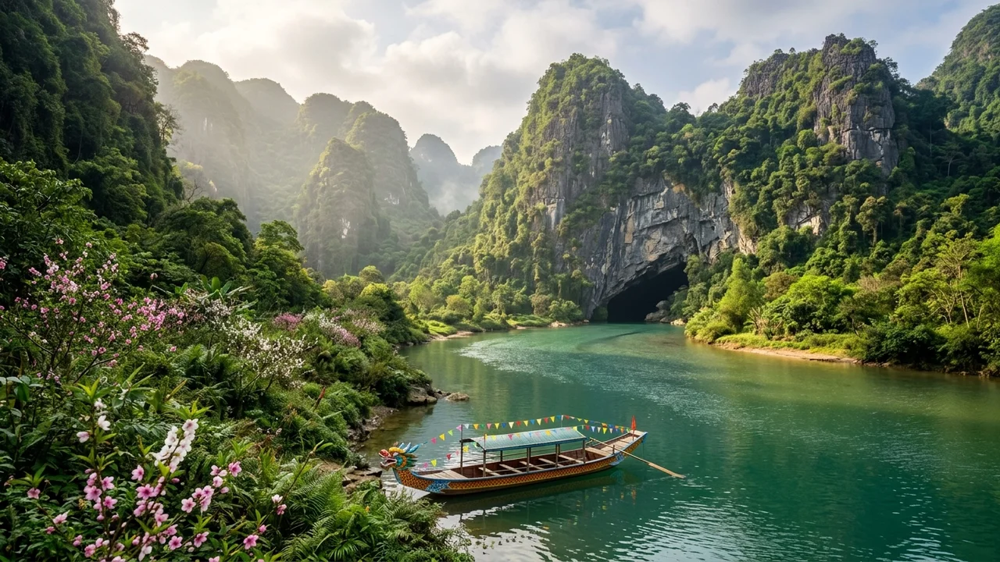
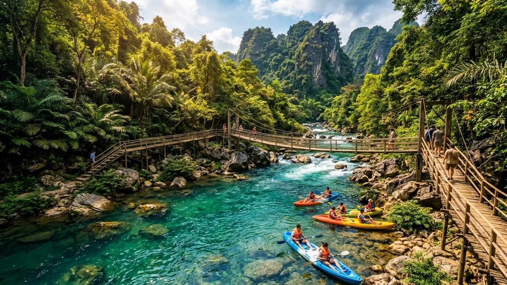
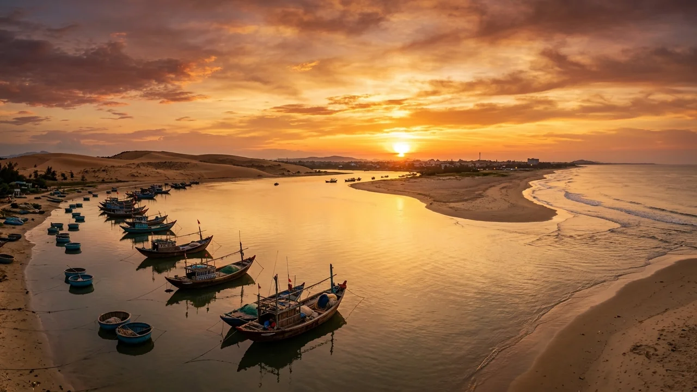
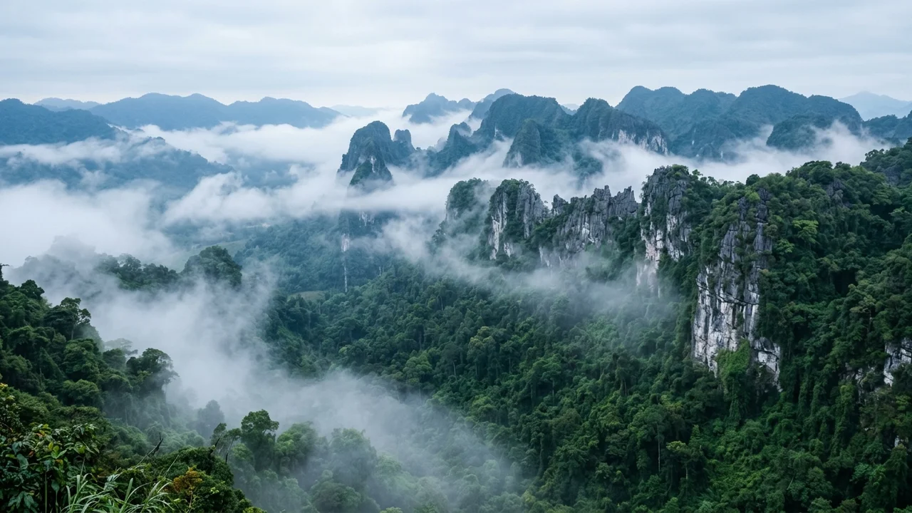
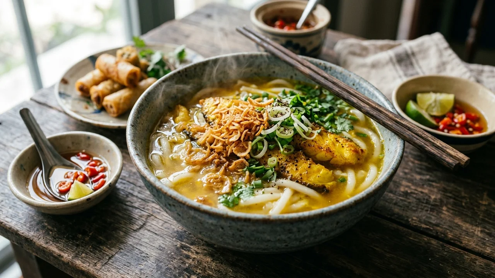
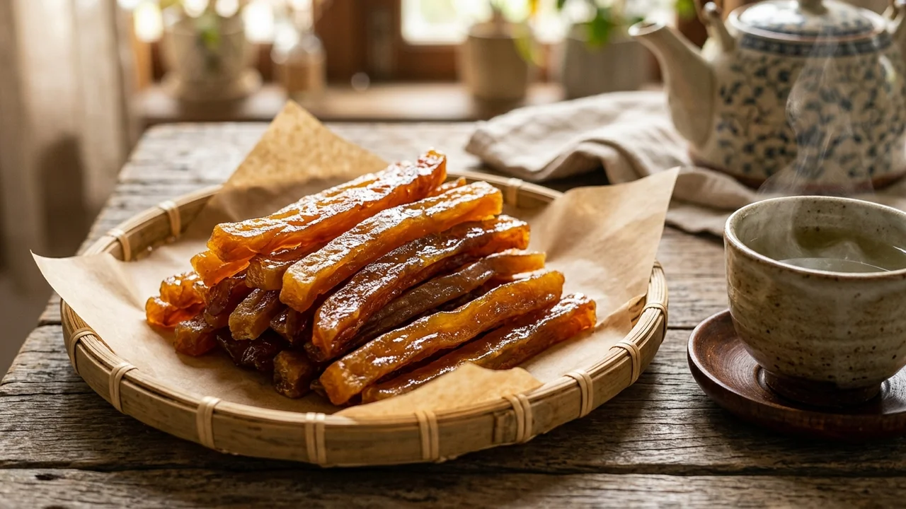
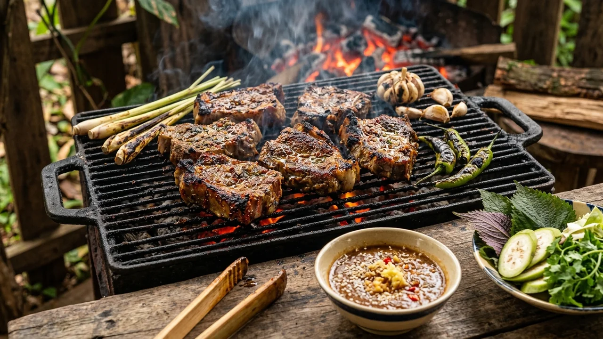
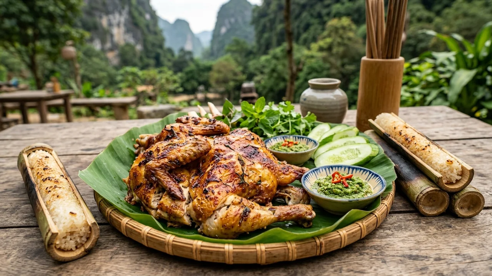
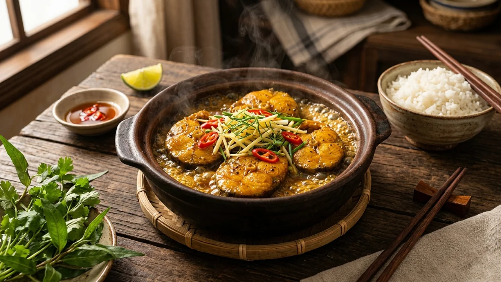

🧭 1. Tổng quan điểm đến
Vườn quốc gia Phong Nha - Kẻ Bàng là di sản hiếm hoi của thế giới hai lần được UNESCO ghi danh nhờ giá trị địa chất - địa mạo ngoại hạng toàn cầu và hệ sinh thái đa dạng sinh học phong phú bậc nhất hành tinh. Tại đây, hang Sơn Đoòng được kỷ lục Guinness ghi nhận là hang động tự nhiên lớn nhất thế giới, chứa đựng cả một hệ sinh thái rừng nhiệt đới, dòng sông ngầm chảy xiết và khí hậu biệt lập bên trong lòng đất.
Bên cạnh kỳ quan ngầm, Quảng Bình còn say lòng du khách với dòng sông Son trong xanh như ngọc bích, bãi biển Nhật Lệ thơ mộng, đồi cát Quang Phú trải dài ngút mắt và bề dày lịch sử oanh liệt của tuyến đường Trường Sơn huyền thoại.
📜 2. Vị trí địa lý & Dấu ấn lịch sử
Tỉnh Quảng Bình nằm ở Bắc Trung Bộ, nơi hẹp nhất theo chiều Đông - Tây của dải đất hình chữ S (chỉ khoảng 50km). Vườn quốc gia Phong Nha - Kẻ Bàng có diện tích vùng lõi 123.326 ha thuộc địa bàn các huyện Bố Trạch và Minh Hóa, tiếp giáp với Khu bảo tồn Hin Namno của nước bạn Lào. Khí hậu Quảng Bình chia làm hai mùa rõ rệt: mùa khô từ tháng 3 đến tháng 8 chan hòa nắng vàng (thích hợp nhất cho thám hiểm hang động) và mùa mưa bão từ tháng 9 đến tháng 11.
⚖️ Căn cứ Pháp lý & Quyết định Xếp hạng Di sản Chính thống
Giá trị ngoại hạng toàn cầu của di sản Phong Nha - Kẻ Bàng và các di tích lịch sử tại Quảng Bình được xác lập qua các văn bản pháp quy của Nhà nước và quyết định của UNESCO:
- Công nhận Di sản Thiên nhiên Thế giới lần 1 (03/07/2003): Kỳ họp thứ 27 của Ủy ban Di sản Thế giới UNESCO tại Paris (Pháp) ghi danh Vườn quốc gia Phong Nha - Kẻ Bàng theo tiêu chuẩn (viii) về địa chất và địa mạo nổi bật toàn cầu.
- Công nhận Di sản Thế giới lần 2 (08/07/2015): Kỳ họp thứ 39 tại Bonn (Đức) tiếp tục công nhận bổ sung theo tiêu chuẩn (ix) về tiến trình sinh thái và tiêu chuẩn (x) về đa dạng sinh học và các loài bị đe dọa.
- Quyết định số 1272/QĐ-TTg ngày 12/08/2009 của Thủ tướng Chính phủ: Xếp hạng Vườn quốc gia Phong Nha - Kẻ Bàng là Di tích Quốc gia Đặc biệt (Đợt 1).
- Quyết định số 2383/QĐ-TTg ngày 09/12/2013 của Thủ tướng Chính phủ: Xếp hạng Di tích lịch sử Đường Trường Sơn - Đường Hồ Chí Minh (hệ thống bến phà Xuân Sơn, Hang Tám Cô, đường 20 Quyết Thắng) là Di tích Quốc gia Đặc biệt.
- Quyết định số 2128/QĐ-TTg ngày 29/12/2017 của Thủ tướng Chính phủ: Phê duyệt Quy hoạch chung xây dựng Khu du lịch quốc gia Phong Nha - Kẻ Bàng, tỉnh Quảng Bình đến năm 2030.
Về dấu ấn lịch sử, Quảng Bình là vùng "địa linh nhân kiệt", yết hầu quân sự hiểm yếu trong chiều dài dựng nước và giữ nước. Từ thế kỷ XVII trong cuộc phân tranh Trịnh - Nguyễn, Quân sư Đào Duy Từ đã cho đắp hệ thống Lũy Thầy (Lũy Đào Duy Từ) kiên cố cùng Quảng Bình Quan khống chế con đường thiên lý Bắc Nam. Thời kỳ kháng chiến chống Mỹ, mảnh đất "tuyến lửa" Quảng Bình là đầu mối xuất phát của tuyến đường Hồ Chí Minh huyền thoại, nơi ghi dấu sự hy sinh anh dũng của các chiến sĩ công binh, thanh niên xung phong tại Hang Tám Cô và bến phà Xuân Sơn.
⛰️ 3. Huyền thoại Vương quốc Hang động
🌍 Huyền thoại Sơn Đoòng & Chàng thợ rừng Hồ Khanh
Năm 1990, trong một chuyến đi rừng tìm trầm hương sâu trong lõi Vườn quốc gia Phong Nha - Kẻ Bàng, người thợ sơn tràng Hồ Khanh bất ngờ gặp phải cơn giông rừng dữ dội. Khi tìm chỗ trú ẩn bên chân vách đá dựng đứng, ông phát hiện một làn sương mù mát lạnh tỏa ra từ miệng hang cùng tiếng gió rít và tiếng nước gầm réo ầm ầm từ lòng đất sâu thẳm. Phải mất gần 20 năm sau, vào năm 2009, Hồ Khanh mới dẫn đoàn thám hiểm Hiệp hội Hang động Hoàng gia Anh (BCRA) do ông Howard Limbert dẫn đầu quay lại tìm đúng tọa độ kỳ bí này. Cửa hang mở ra trước sự kinh ngạc tột cùng của nhân loại: Hang Sơn Đoòng — hang động tự nhiên vĩ đại nhất hành tinh có thể chứa trọn một tòa nhà 40 tầng ở New York hay một chiếc máy bay Boeing 747 bay qua.
💧 Huyền tích Suối Nước Moọc: Nguồn nước mọc lên từ lòng đất đá
Theo tiếng bản địa của đồng bào Arem và Vân Kiều, "Moọc" có nghĩa là "mọc lên" hay "đùn lên". Dân gian truyền tụng rằng giữa mùa khô hạn gay gắt của miền Trung, khi muôn loài cây cỏ đều héo rũ, một dòng suối xanh màu ngọc bích kỳ lạ bỗng nhiên phun trào cuồn cuộn từ chân vách núi đá vôi, nuôi dưỡng sự sống tốt tươi cho cả cánh rừng. Các nhà khoa học sau này lý giải dòng suối bắt nguồn từ một hệ thống sông ngầm karst khổng lồ chảy trong lòng núi đá vôi hàng chục cây số trước khi lộ thiên phun trào tạo nên cảnh sắc thần tiên.
🏰 Huyền thoại Cổng Trời Đèo Ngang & Nàng thơ Bà Huyện Thanh Quan
Đèo Ngang (Hoành Sơn Quan) là ranh giới tự nhiên hiểm trở nối liền Quảng Bình và Hà Tĩnh. Tương truyền năm 1069 dưới triều Lý, Hoành Sơn đã là phòng tuyến biên viễn trọng yếu. Năm 1833, vua Minh Mạng cho xây dựng cửa ải Hoành Sơn Quan bằng đá kiên cố trên đỉnh đèo, tục gọi Cổng Trời. Vẻ đẹp trầm mặc, hoài cổ của non sông nơi đây đã đi vào áng thơ bất hủ của Bà Huyện Thanh Quan: "Bước tới Đèo Ngang bóng xế tà, cỏ cây chen đá lá chen hoa..."
🌸 4. Chuỗi hình ảnh 4 mùa du lịch
Khí hậu Quảng Bình chuyển hóa sâu sắc theo mùa tạo nên những trải nghiệm thám hiểm và thưởng ngoạn cảnh quan kỳ vĩ hoàn toàn khác biệt trong năm:

Tháng 1 - 3Mùa Xuân: Sông Son Xanh Biếc & Du Xuân Trẩy Hội
Thời điểm: Tháng 1 đến hết tháng 3 Dương lịchTiết trời mát mẻ, nắng nhẹ chan hòa, nước sông Son trong vắt ngọc bích. Thời điểm lý tưởng cho các chuyến du ngoạn thong dong vãn cảnh chùa Hoằng Phúc cổ tự nghìn năm và trải nghiệm thuyền nan khám phá động Phong Nha.

Tháng 4 - 8Mùa Hạ: Mùa Vàng Thám Hiểm & Giải Nhiệt Suối Moọc
Thời điểm: Tháng 4 đến hết tháng 8 Dương lịchMùa khô tuyệt đối, điều kiện an toàn hoàn hảo nhất để chinh phục các tour trekking mạo hiểm như Sơn Đoòng, Tú Làn, Hang Én, bơi trong hang Tối và đắm mình trong làn nước ngọc bích của suối Nước Moọc.

Tháng 9 - 10Mùa Thu: Biển Êm Nhật Lệ & Hoàng Hôn Tĩnh Lặng
Thời điểm: Tháng 9 đến hết tháng 10 Dương lịchThời điểm giao mùa dịu dàng, lượng khách không quá đông. Rất thích hợp cho các kỳ nghỉ dưỡng thảnh thơi tại các resort ven biển Đồng Hới, dạo bước trên đồi cát Quang Phú và thưởng thức hải sản mực nhảy nướng than hoa.

Tháng 11 - 12Mùa Đông: Sương Khói Đại Ngàn & Khám Phá Khô Ráo
Thời điểm: Tháng 11 đến hết tháng 12 Dương lịchTiết trời se lạnh của mùa đông miền Trung. Du khách ưu tiên tham quan các hang động khô trên cạn như Động Thiên Đường (nhiệt độ bên trong hang luôn ổn định 20-22°C ấm áp) và thưởng thức các món lẩu gà đồi, cháo canh nóng hổi thơm nồng ớt cay.
🏞️ 5. Top 10 Thắng cảnh biểu tượng & Dấu tích lịch sử
Khám phá 10 kỳ quan hang động và danh lam thắng cảnh làm rạng danh non sông Việt Nam trên bản đồ địa lý thế giới:

1. Hang Sơn Đoòng — Kỳ Quan Vĩ Đại Nhất Trái Đất
Kỳ quan ngầm vĩ đại nhất hành tinh với khu rừng nguyên sinh và con sông ngầm riêng biệt ẩn sâu trong lòng đất.

2. Động Phong Nha
Du thuyền trên dòng sông Son êm ả luồn vào lòng núi chiêm ngưỡng 7 kỷ lục thạch nhũ kỳ vĩ.

3. Động Thiên Đường
Cung điện ngầm tráng lệ dài nhất châu Á với muôn vàn kiệt tác nhũ đá rực rỡ tựa chốn bồng lai.

4. Suối Nước Moọc
Tuyệt tác thiên nhiên phun trào từ lòng đất, thiên đường sinh thái mát lạnh giữa rừng nguyên sinh.

5. Sông Chày - Hang Tối
Thử thách mạo hiểm đu dây zipline vượt sông và thư giãn ngâm mình trong bùn khoáng tự nhiên quý giá.

6. Hang Tám Cô & Cung Đường 20 Quyết Thắng — Dấu Ấn Anh Hùng
Bản hùng ca bi tráng của 8 cô gái thanh niên xung phong kiên cường giữ vững mạch máu giao thông thời kỳ kháng chiến.

7. Vũng Chùa - Đảo Yến
Nơi an nghỉ vĩnh hằng của Người anh cả Quân đội nhân dân Việt Nam giữa non xanh nước biếc biển trời quê hương.

8. Biển Nhật Lệ & Đồi Cát Quang Phú
Dải bờ biển ngọc ngà thơ mộng kết hợp đồi cát trắng trải dài bất tận nhìn ra vịnh biển xanh mát.

9. Quảng Bình Quan
Cổng thành cổ kính sừng sững giữa phố biển, biểu tượng kiên cường của vùng đất địa đầu tuyến lửa.

10. Đèo Ngang & Hoành Sơn Quan
Cổng ải đá cổ kính trên đỉnh đèo lộng gió, nơi lắng đọng những vần thơ bất hủ đi cùng năm tháng.
🚗 6. Cẩm nang di chuyển & Cung đường giao thông
Quảng Bình là nút thắt giao thông huyết mạch của dải đất miền Trung với đầy đủ hạ tầng sân bay quốc tế, đường sắt xuyên Việt và các tuyến cao tốc hiện đại:
| Phương tiện | Chặng khởi hành / Đầu mối | Thời gian di chuyển | Giá vé tham khảo | Lưu ý & Trải nghiệm |
|---|---|---|---|---|
| Máy bay | Hà Nội (HAN) / TP.HCM (SGN) → Sân bay Đồng Hới (VDH) | 1 giờ – 1.5 giờ | 850.000 – 1.900.000đ/lượt | Sân bay cách trung tâm Đồng Hới 6km, cách Phong Nha 45km. Các hãng VNA, Vietjet, Bamboo khai thác hàng ngày. |
| Tàu hỏa (Đường sắt Bắc Nam) | Hà Nội / Đà Nẵng / Huế → Ga Đồng Hới | 8 – 10h (từ HN) / 3h (từ Huế) | 350.000 – 850.000đ/vé | Đi tàu đêm nằm khoang 4 giường từ Hà Nội ngủ một giấc sáng sớm đến nơi rất tiện lợi, tiết kiệm đêm khách sạn. |
| Xe khách chất lượng cao / Limousine | Hà Nội (bến Mỹ Đình, Giáp Bát) → Đồng Hới / Phong Nha | 8 – 9 giờ chạy đêm | 280.000 – 400.000đ/vé | Nhiều hãng xe chạy thẳng vào thị trấn Phong Nha (Hưng Thành, Camel, Queen Cafe) rất thuận tiện cho khách du lịch. |
| Thuê xe máy / Ô tô tự lái tại chỗ | Di chuyển Đồng Hới → Phong Nha theo đường Hồ Chí Minh Đông | 45 – 50 phút (45km) | 120.000 – 150.000đ/ngày (xe máy) | Đường xá phẳng phiu, hai bên đường là đồng lúa và núi đá vôi tuyệt đẹp, cung đường Hồ Chí Minh nhánh Tây lái xe rất thích. |
🍲 7. Tinh hoa ẩm thực đặc sản Quảng Bình
Ẩm thực Quảng Bình đậm đà hương vị mặn mòi của gió Lào cát trắng, kết hợp nguồn hải sản biển tươi ngon và đặc sản rừng núi Trường Sơn độc đáo:

1. Cháo Canh Cá Lóc & Ram Giòn
Bữa sáng linh hồn của người Quảng Bình. Sợi bột cán tay dẻo dai chan nước hầm cá ngọt thanh, cá lóc xào nghệ thơm nồng và thanh ram chiên giòn rụm.
2. Bánh Bột Lọc Tôm Sông Rán & Hấp
Vỏ bánh trong vắt thấy rõ tôm sông đỏ âu cùng thịt rim mộc nhĩ, chấm nước mắm ớt cay nồng đậm đà khó quên.

3. Khoai Gieo / Khoai Dẻo Hải Ninh
Đặc sản quý giá chắt chiu từ nắng gió dải cát miền Trung. Miếng khoai dẻo quánh óng ánh màu hổ phách ngọt đậm đà nhâm nhi cùng chén trà sen ấm áp.

4. Dê Núi Phong Nha Nướng Tảng Than Hoa
Thịt dê leo vách đá săn chắc, thơm ngọt nướng than hồng xèo xèo giữ trọn độ mọng nước chấm tương bần ấm nồng.

5. Gà Đồi Nướng Chấm Muối Cheo
Gà đồi thả tự nhiên nướng giòn rụm thơm lừng ăn kèm cơm lam dẻo thơm và chấm muối cheo lá rừng thảo mộc cay nồng độc đáo.

6. Cá Trắm Sông Son Kho Nghệ Niêu Đất
Cá nuôi dòng nước chảy ngọc bích thịt chắc ngọt, kho liu riu trong niêu đất với nghệ tươi và ớt hiểm thơm phức đưa cơm.
🎫 8. Bảng giá vé tham quan & Dịch vụ niêm yết
Bảng giá vé tham quan danh lam thắng cảnh tại Quảng Bình được Trung tâm Du lịch Phong Nha - Kẻ Bàng và các đơn vị quản lý niêm yết công khai:
| Điểm tham quan / Dịch vụ | Nội dung trải nghiệm | Giá vé người lớn | Giá vé trẻ em / Ghi chú |
|---|---|---|---|
| Động Phong Nha | Thuyền máy sông Son + Khám phá động nước thạch nhũ | 150.000đ/vé | Thuyền vận chuyển: 550.000đ/chuyến (chở tối đa 12 khách). Trẻ em dưới 1.3m miễn phí. |
| Động Thiên Đường | Khám phá cầu gỗ 1km trong lòng cung điện ngầm | 250.000đ/vé | Trẻ em 1m – 1.3m: 125.000đ. Xe điện trung chuyển: 100.000 – 200.000đ/xe khứ hồi. |
| Suối Nước Moọc | Vé trọn gói: Vé vào cổng + tắm suối + chèo thuyền kayak + nhảy cầu | 180.000đ/vé trọn gói | Vé ngắm cảnh không tắm: 80.000đ/người. Trẻ em dưới 1.3m: miễn phí hoặc giảm 50%. |
| Sông Chày - Hang Tối | Trọn gói: Đu dây zipline 400m + chèo kayak + thám hiểm hang Tối + tắm bùn | 450.000đ/vé trọn gói | Mùa đông giảm còn 250.000đ. Cần mặc đồ bơi gọn gàng để tham gia tắm bùn. |
| Hang Tám Cô & Vũng Chùa | Dâng hương tưởng niệm các anh hùng liệt sĩ và Đại tướng | Miễn phí hoàn toàn | Mở cửa đón khách trang nghiêm tất cả các ngày trong năm. |
📌 Lưu ý: Người có công với cách mạng, người khuyết tật nặng và trẻ em dưới 1m được miễn phí vé tham quan. Người cao tuổi từ đủ 60 tuổi trở lên (quốc tịch Việt Nam) được giảm 50% giá vé khi xuất trình CCCD gốc. Giá vé tham quan hang động và các dịch vụ thuyền kayak, zipline có thể điều chỉnh nhẹ theo biểu phí của Ban Quản lý Vườn Quốc gia Phong Nha - Kẻ Bàng vào mùa cao điểm hè.
🗺️ 9. Gợi ý lịch trình 3N2Đ & Mẹo thám hiểm an toàn
🧗 Gợi Ý Lịch Trình 3 Ngày 2 Đêm (3N2Đ) Khám Phá Trọn Vẹn Kỳ Quan Hang Động
- Ngày 1: Đến Đồng Hới → Động Thiên Đường → Giải nhiệt Suối Nước Moọc
• Sáng: Hạ cánh sân bay Đồng Hới hoặc tàu hỏa đến ga. Xe đưa về thị trấn Phong Nha nhận phòng resort ven sông Son, ăn trưa với cháo canh cá lóc.
• Chiều: Khám phá Động Thiên Đường với cầu gỗ 1km ngắm rừng nhũ đá lộng lẫy. Sau đó di chuyển sang Suối Nước Moọc tắm suối mát lạnh và chèo thuyền kayak.
• Tối: Thưởng thức bữa tối gà đồi nướng chấm muối cheo lá é và cá trắm sông Son kho nghệ niêu đất. - Ngày 2: Động Phong Nha → Zipline Tắm bùn Hang Tối → Về phố biển Đồng Hới
• Sáng: Xuống bến thuyền sông Son lên thuyền rồng vào thám hiểm Động Phong Nha nước trong xanh ngọc bích.
• Chiều: Thử thách cảm giác mạnh đu dây Zipline vượt sông Chày và tắm bùn khoáng tự nhiên trong lòng Hang Tối. Chiều muộn lái xe về thành phố Đồng Hới nhận phòng khách sạn.
• Tối: Dạo biển Nhật Lệ, ăn bánh bột lọc tôm sông rán giòn và mực nhảy hấp gừng ven biển. - Ngày 3: Đồi cát Quang Phú → Vũng Chùa Đảo Yến → Quảng Bình Quan → Mua quà về
• Sáng: Dậy sớm đón bình minh và trượt cát tại Đồi cát Quang Phú. Di chuyển ra Vũng Chùa dâng hương viếng mộ Đại tướng Võ Nguyên Giáp.
• Trưa: Check-in chụp ảnh Quảng Bình Quan cổ kính giữa lòng thành phố, ghé Chợ Đồng Hới mua khoai gieo Hải Ninh, mực khô, bánh lọc về làm quà trước khi ra sân bay/ga tàu.
💡 Mẹo Bản Địa Thám Hiểm Hang Động & Quy Tắc An Toàn Bắt Buộc
- Trang phục thám hiểm: Mang theo dép rọ hoặc giày thể thao lội nước chuyên dụng có độ bám cao chống trơn trượt trên vách đá; mang theo 2-3 bộ đồ bơi khô nhanh để thay sau khi tắm suối và tắm bùn.
- Túi chống nước cho thiết bị: Bắt buộc trang bị túi chống nước chuyên dụng cho điện thoại và máy ảnh khi tham gia chèo kayak, zipline sông Chày và tắm suối Moọc.
- Bảo vệ tuyệt đối thạch nhũ: Tuyệt đối không chạm tay vào thạch nhũ non đang phát triển trong hang, không bẻ gãy nhũ đá làm kỷ niệm; mồ hôi và vi khuẩn từ tay người có thể làm chết quá trình kết tụ thạch nhũ hàng triệu năm.
- Quy định bảo tồn di sản: Không xả rác, không mang đồ ăn có mùi vào sâu trong hang động và vùng lõi rừng nguyên sinh Vườn quốc gia.